Introduction to Quantum Computing
Note
Installation Required: This functionality requires MATLAB Support Package for Quantum Computing.
Quantum computing is an emerging technology that uses the laws of quantum physics to perform computations. Quantum computations use phenomena in quantum physics, such as superposition and entanglement to perform computations. In contrast to classical computing where information is stored as binary bits, which can only be in either the 0 or 1 state, quantum computing uses quantum bits, or qubits, which can be in the 0 and 1 states at the same time. Because of this fundamental difference, quantum computers have the potential to outperform classical computers when solving certain types of problems, such as optimization or simulation.
This topic describes three building blocks of quantum computing: qubits, quantum gates, and quantum circuits. This topic also shows how to perform measurements of a quantum circuit, either by simulating the circuit locally with random sampling or by running the circuit remotely on a quantum device.
Qubit
The qubit is the basic building block of quantum computing. Qubits store information and can be physically realized by two-state quantum devices. A qubit can be in a linear combination of the and states with complex coefficients, referred to as a superposition. If the complex coefficients are normalized, then they represent the probability amplitudes of measuring the qubit in the or state. For example, a qubit can be in the state. You can determine the probability of measuring the qubit in the state by taking the magnitude squared of the probability amplitude of the state, which is 1/3. Similarly, the probability of measuring the qubit in the state is 2/3.
Visualize State of Single Qubit in Bloch Sphere
A practical way to visualize the quantum state of a single qubit is using the Bloch sphere. In general, the state of a qubit can be written as
The Bloch sphere represents the parameters and in spherical coordinates, respectively, as the colatitude with respect to the z-axis and the longitude with respect to the x-axis of the unit sphere. The state is plotted as a point on the unit sphere with coordinates
By convention, the north pole is the state, the south pole is the state, and the equator is a linear combination of these two states with equal probability of measuring or .
To plot any quantum state of a qubit on the Bloch sphere, use the
plotBlochSphere function (provided in the Helper Functions section). This
function takes a complex vector with two elements that represent the probability
amplitudes of the and states.
For example, plot the state on the Bloch sphere.
plotBlochSphere([1; 0])
title("|0> state on Bloch sphere")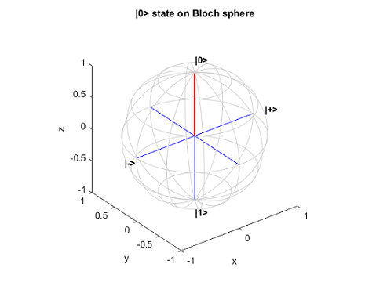
Plot the state on the Bloch sphere.
plotBlochSphere([0; 1])
title("|1> state on Bloch sphere")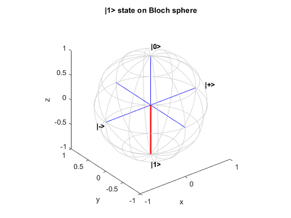
Plot the state on the Bloch sphere. This state is represented by a point on the equator. Its opposite point on the other side of the sphere represents the state.
plotBlochSphere([1; 1]/sqrt(2))
title("|+> state on Bloch sphere")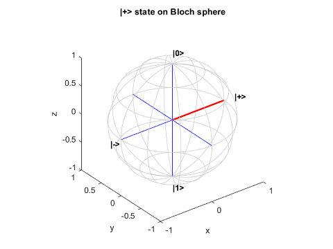
Plot the state on the Bloch sphere.
plotBlochSphere([1; -1]/sqrt(2))
title("|-> state on Bloch sphere")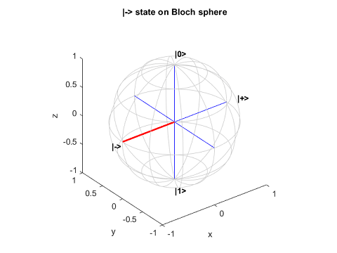
Plot the state on the Bloch sphere.
plotBlochSphere([1; 1i]/sqrt(2))
title("|R> state on Bloch sphere")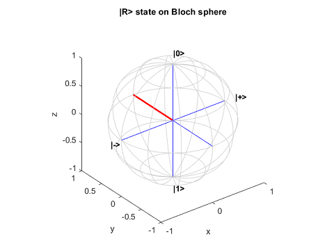
Plot the state on the Bloch sphere.
plotBlochSphere([1; -1i]/sqrt(2))
title("|L> state on Bloch sphere")
Find Probabilities of Measuring Possible States
The quantum state of a single qubit is expressed as a normalized two-element complex vector, where the first element gives the amplitude of the state and the second element gives the amplitude of the state. A measurement of this qubit yields a classical or state, with the probability of measuring each state given by the magnitude squared of its respective amplitude.
You can use the quantum.gate.QuantumState constructor to create a quantum state, and then use
the querystates
function to find the possible states to measure and their probabilities. For example,
create a quantum state that represents the state.
state = quantum.gate.QuantumState([0 1]); state.Amplitudes
ans =
0
1The querystates function returns all possible states to measure and
the probability of measuring each one. Here, only the state is
possible.
[states,probabilities] = querystates(state)
states =
"1"
probabilities =
1state = quantum.gate.QuantumState([1 1i]/sqrt(2)); state.Amplitudes
ans = 0.7071 + 0.0000i 0.0000 + 0.7071i
The querystates function returns the "0" and
"1" states as the possible states to measure and a 0.5 probability of
measuring each
state.
[states,probabilities] = querystates(state)
states =
2×1 string array
"0"
"1"
probabilities =
0.5000
0.5000You can plot a histogram that shows the probabilities of measuring all possible states
by using histogram.
histogram(state)
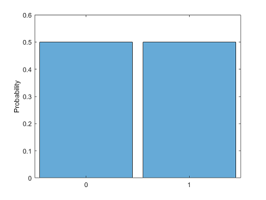
As another example, create a quantum state where the two elements of the vector have
different amplitudes and different absolute values. If you call
quantum.gate.QuantumState with a general complex vector, then the
constructor creates a quantum state that is normalized. For example, create a quantum
state and find its measurement
probabilities.
state = quantum.gate.QuantumState([3 -4i]); state.Amplitudes
ans = 0.6000 + 0.0000i 0.0000 - 0.8000i
[states,probabilities] = querystates(state)
states =
2×1 string array
"0"
"1"
probabilities =
0.3600
0.6400Only properties of a quantum state that translate into probabilities are measurable. For example, multiplying every amplitude of a quantum state by –1 or has no measurable impact. This type of transformation is called applying a global phase. However, multiplying one of the amplitudes by –1 or (applying a relative phase) has a measurable impact. If you measure the state directly after applying the relative phase, you do not see a difference in the probabilities. But if you apply additional gate operations on the qubits, you can detect the difference due to the relative phase.
Quantum Gate
The quantum gate is the next building block of quantum computing. Quantum gates represent reversible operations that transform the quantum state according to unitary matrices. While all gate operations are deterministic, measuring in quantum computing is probabilistic, with the probabilities of various measurements depending on the states of the qubits. For a complete list of quantum gates available in MATLAB®, see Types of Quantum Gates.
Pauli X Gate
An example of a quantum gate is the Pauli X gate. This gate multiplies the state vector by the Pauli X matrix , which flips the state of a qubit to the state and flips the state to the state.
For example, create the initial quantum state of a single qubit.
coeffs = [0.7; 0.5i]; inState = quantum.gate.QuantumState(coeffs); inAmps = inState.Amplitudes
inAmps = 0.8137 + 0.0000i 0.0000 + 0.5812i
Create a quantum circuit that applies the Pauli X gate (xGate) to the
qubit by using quantumCircuit.
Simulate this circuit to get the final state of the qubit by using simulate.
c = quantumCircuit(xGate(1)); outState = simulate(c,inState); outAmps = outState.Amplitudes
outAmps = 0.0000 + 0.5812i 0.8137 + 0.0000i
To illustrate the operation performed by the Pauli X gate, plot the initial state and the final state of the circuit on a Bloch sphere. In the Bloch sphere representation, the Pauli X gate rotates the state around the x-axis (the axis of the and states) by an angle of .
figure tiledlayout(1,2); nexttile plotBlochSphere(inAmps) nexttile plotBlochSphere(outAmps) hold on plot3([-1 1],[0 0],[0 0],LineWidth=2,Color=[0 0.8 0]) hold off
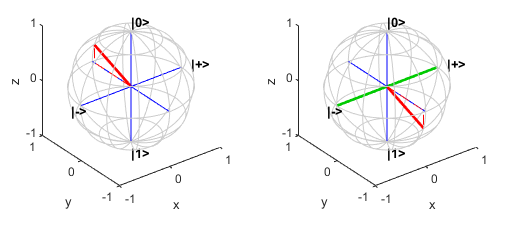
For the choice of basis states of a qubit, the and states are the eigenstates of the Pauli Z gate. Applying the Pauli Z
gate (zGate) has no
effect on the state and maps the state to . The Pauli Z gate is also known as a phase-flip gate. Similarly, the and states are the eigenstates of the Pauli X gate. The eigenstates of the
Pauli Y gate (yGate) are
the other two orthogonal directions in the plot, which are the state and the states. Although each of these pairs would work as basis states, the and basis states are the standard basis states in which measurements are
made. To rotate around the x-, y-, or
z-axis with an arbitrary angle, you can use the rotation gates
rxGate,
ryGate, or
rzGate.
Hadamard Gate
Another example of a quantum gate is the Hadamard gate, which transforms the Z basis to the X basis. That is, the gate transforms the and states to the and states, respectively. For example, consider the same initial quantum state that was previously created.
inAmps = inState.Amplitudes
inAmps = 0.8137 + 0.0000i 0.0000 + 0.5812i
Create a quantum circuit that applies the Hadamard gate (hGate) to the
qubit. Simulate this circuit to get the final state of the
qubit.
c = quantumCircuit(hGate(1)); outState = simulate(c,inState); outAmps = outState.Amplitudes
outAmps = 0.5754 + 0.4110i 0.5754 - 0.4110i
The operation by the Hadamard gate is not apparent from the probability amplitudes of
the states. To better understand this operation, transform the complex amplitudes of the
states into coordinates on the Bloch sphere by using the
mapToBlochSphere function (provided in the Helper Functions section). Show the
coordinates of the initial state and final state on the Bloch
sphere.
inCoords = mapToBlochSphere(inAmps)
inCoords =
0.0000 0.9459 0.3243outCoords = mapToBlochSphere(outAmps)
outCoords =
0.3243 -0.9459 0.0000In the Bloch sphere representation, the Hadamard gate rotates the state around the [1,0,1] axis by an angle of .
figure tiledlayout(1,2); nexttile plotBlochSphere(inAmps) nexttile plotBlochSphere(outAmps) hold on plot3([-1 1]/sqrt(2),[0 0],[-1 1]/sqrt(2),LineWidth=2,Color=[0,0.8,0]) hold off
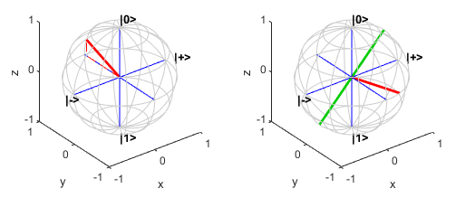
Quantum devices typically provide measurements only in the Z basis, which is a choice of basis that is not intrinsically special given the various transformations available using quantum gates. For example, to measure a qubit in the X basis instead, you can apply a Hadamard gate to the qubit before performing the measurement.
Quantum Circuit
The quantum circuit is the next building block of quantum computing. Quantum circuits consist of quantum gates that act on qubits. A quantum circuit diagram is commonly used as a visual model for a sequence of quantum gates applied to qubits. This example of quantum circuit diagram includes a Hadamard gate and a controlled X gate acting on two qubits.
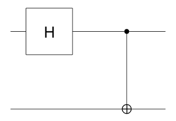
In a quantum circuit diagram, each solid horizontal line represents a qubit, or more generally, a qubit register. In MATLAB, the top line is a qubit with index 1 and the remaining lines from top to bottom are labeled sequentially. In this example, the circuit consists of two qubits with indices 1 and 2.
Quantum gates perform operations on the qubits. A gate acting on qubits is denoted as a specific gate symbol. In this example, the symbol
 represents a Hadamard gate acting on qubit 1. The next
symbol 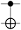 represents a controlled X gate with qubit 1 as the
control and qubit 2 as the target.
represents a Hadamard gate acting on qubit 1. The next
symbol 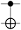 represents a controlled X gate with qubit 1 as the
control and qubit 2 as the target.In a circuit diagram, time flows from left to right. Quantum gates are ordered in chronological order with the leftmost gate as the gate first applied to the qubits. The solid horizontal lines hold the overall quantum state of the circuit that is passed through each of the gates in the diagram from left to right.
For a quantum circuit with n qubits, the overall basis states are constructed from the Kronecker product of the n qubit bases with ordering from left to right for qubits with the lowest index to the highest index. In other words, if the basis of a single qubit with index k is labeled as (which can be or ), then the basis states of the circuit with n qubits are represented by . For example, for a circuit with two qubits, all possible basis states expressed as a column vector are . This definition follows most textbooks.
A gate operation can be represented as a transformation matrix for these basis states. For example, consider the controlled X gate that operates on a target qubit (with index 2) based on the state of a control qubit (with index 1). If the control qubit is in the state, this gate does nothing. If the control qubit is in the state, this gate applies the Pauli X gate to the target qubit. The matrix representation of the controlled X gate is
The quantum state of a circuit with n qubits can then be represented by the linear combinations of the basis states, which can be a separable or an entangled state. A separable state is a quantum state that can be factored into individual states belonging to separate subspaces of the qubits. An entangled state is a quantum state that is not separable. For example, for a circuit with two qubits, the quantum state can be a separable state, such as
where qubit 1 is in the state and qubit 2 is in the state. The quantum state of the two qubits can also be an entangled state, such as , which cannot be written as the product of each qubit state. For this entangled state, the two qubits are an inseparable whole. If one of these qubits is measured in the state, then the other qubit will also be measured in the state. Similarly, if one of these qubits is measured in the state, then the other qubit will also be measured in the state.
By default, the initial state of each qubit in a quantum circuit is the state. For example, the initial state of the quantum circuit in the diagram is . After the operations by the Hadamard and controlled X gates, the final state of the circuit is an entangled state, .
Build and Simulate Quantum Circuit
You can build a quantum circuit by using the quantumCircuit
function. Create an empty quantum circuit with two qubits. Simulate the quantum state
returned by this circuit. Show the quantum state of this circuit as a string formula by
using formula.
c = quantumCircuit(2); s = simulate(c); str = formula(s)
str =
"1 * |00>"By default, all qubits are set to 0. Next, pass a different initial quantum state, , to the simulate function, where the quantum state is
a linear combination of all basis states of the
qubits.
inState = quantum.gate.QuantumState([1/2; -1/2; 1i/2; -1i/2]);
s = simulate(c,inState);
str = formula(s,Basis="Z")str =
"(0.5+0i) * |00> +
(-0.5+0i) * |01> +
(0+0.5i) * |10> +
(0-0.5i) * |11>"You can add quantum gates to the circuit. For this example, add a controlled X (or CNOT) gate to the circuit. Then plot the circuit.
c.Gates = cxGate(1,2); figure plot(c)
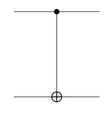
Find the final state of this circuit after passing the initial state to the controlled X gate.
outState = simulate(c,inState);
str = formula(outState,Basis="Z")str =
"(0.5+0i) * |00> +
(-0.5+0i) * |01> +
(0-0.5i) * |10> +
(0+0.5i) * |11>"You can also pass the initial state as to this circuit. Find the final state of this circuit for this initial state.
outState = simulate(c,"+0"); str = formula(outState,Basis="Z")
str =
"0.70711 * |00> +
0.70711 * |11>"Run Circuit and Make Measurement
You can run a circuit built in MATLAB on a remote quantum device and retrieve the measurement result.
Build a quantum circuit that entangles two qubits by using a Hadamard gate and a controlled X gate. Then plot the circuit.
gates = [hGate(1); cxGate(1,2)]; c = quantumCircuit(gates); plot(c)
The default initial state of this circuit is . Simulate the circuit to get its final state.
outState = simulate(c); str = formula(outState)
str =
"0.70711 * |00> +
0.70711 * |11>"To investigate the behavior of this circuit, you can first perform a local simulated
measurement of the circuit. Use randsample to
randomly sample the quantum state of the circuit with 100 shots.
m = randsample(outState,100)
m =
QuantumMeasurement with properties:
MeasuredStates: [2×1 string]
Counts: [2×1 double]
Probabilities: [2×1 double]
NumQubits: 2Show the counts and estimated probabilities of the measured states.
table(m.Counts,m.Probabilities,m.MeasuredStates, ... VariableNames=["Counts","Probabilities","States"])
ans =
2×3 table
Counts Probabilities States
______ _____________ ______
54 0.54 "00"
46 0.46 "11"
In theory, because the quantum state is entangled and it is a superposition only of the and states, the probability of measuring the and states is 0. In practice, however, due to the noise in physical quantum devices to date, the and states can appear as measurements.
To run the circuit on a remote quantum device that is available through Amazon® Web Services (AWS®), first connect to a specific quantum device using quantum.backend.QuantumDeviceAWS.
dev = quantum.backend.QuantumDeviceAWS("Aspen-M-3");Run the circuit on the device with the default 100 shots using the run
function.
task = run(c,dev)
task =
QuantumTaskAWS with properties:
TaskARN: "arn:aws:braket:us-west-1:123456789012:quantum-task/1234abcd-ef56-7890-abc2-34de56f678ab"
Status: "queued"Wait for the task to finish. Retrieve the measurement result of running the circuit on
the device by using fetchOutput.
wait(task) m = fetchOutput(task)
m =
QuantumMeasurement with properties:
MeasuredStates: [4×1 string]
Counts: [4×1 double]
Probabilities: [4×1 double]
NumQubits: 2Show the measurement result. Due to the noise in the quantum device, the and states appear as measurements.
table(m.Counts,m.Probabilities,m.MeasuredStates, ... VariableNames=["Counts","Probabilities","States"])
ans =
4×3 table
Counts Probabilities States
______ _____________ ______
45 0.45 "00"
10 0.1 "10"
5 0.05 "01"
40 0.4 "11"
Helper Functions
This section provides the complete code of the plotBlochSphere and
mapToBlochSphere functions.
function plotBlochSphere(u) % Plot Bloch sphere representation from 2-D complex amplitudes % Copyright 2021-2023 The MathWorks, Inc. arguments u {mustBeNumeric,mustBeVector} end % Compute Bloch sphere representation (3-D real) from a 2-D complex vector P = mapToBlochSphere(u); % Grid view of the sphere alpha = linspace(0,2,101)'; alpha(end+1) = NaN; beta = linspace(0,1,7); beta(end) = []; gamma = linspace(-0.5,0.5,7); % Meridian lines meridianCoordinates = cat(3, cospi(beta).*cospi(alpha), ... sinpi(beta).*cospi(alpha), repmat(sinpi(alpha), 1, length(beta))); % Latitude circles latitudeCoordinates = cat(3, cospi(gamma).*cospi(alpha), ... cospi(gamma).*sinpi(alpha), repmat(sinpi(gamma), length(alpha), 1)); xyz = [reshape(meridianCoordinates,[],3); reshape(latitudeCoordinates,[],3)]; % Plot the grid and coordinate system plot3(xyz(:,1), xyz(:,2), xyz(:,3), "k-", Color=0.8*[1 1 1]) hold on plot3([1 0 0; -1 0 0], [0 1 0; 0 -1 0], [0 0 1; 0 0 -1], "b") % Label qubit basis vectors for X basis and Z basis text([0 0 1.2 -1.2], [0 0 0 0], [1.2 -1.2 0 0], ["|0>" "|1>" "|+>" "|->"], ... FontWeight="bold") % Configure axis view xlabel("x") ylabel("y") zlabel("z") axis equal % Plot the vector plot3([0 P(1)], [0 P(2)], [0 P(3)], "r-", LineWidth=2) plot3([0 P(1) P(1)], [0 P(2) P(2)], [0 0 P(3)], "r--") hold off end function P = mapToBlochSphere(u) % Compute Bloch sphere representation (3-D real) from a 2-D complex vector theta = 2*atan2(abs(u(2)),abs(u(1))); phi = angle(u(2)*conj(u(1))); P = [sin(theta)*cos(phi) sin(theta)*sin(phi) cos(theta)]; end
See Also
quantum.gate.SimpleGate | quantum.gate.CompositeGate | quantumCircuit | quantum.gate.QuantumState | quantum.gate.QuantumMeasurement | quantum.backend.QuantumDeviceAWS | quantum.backend.QuantumTaskAWS